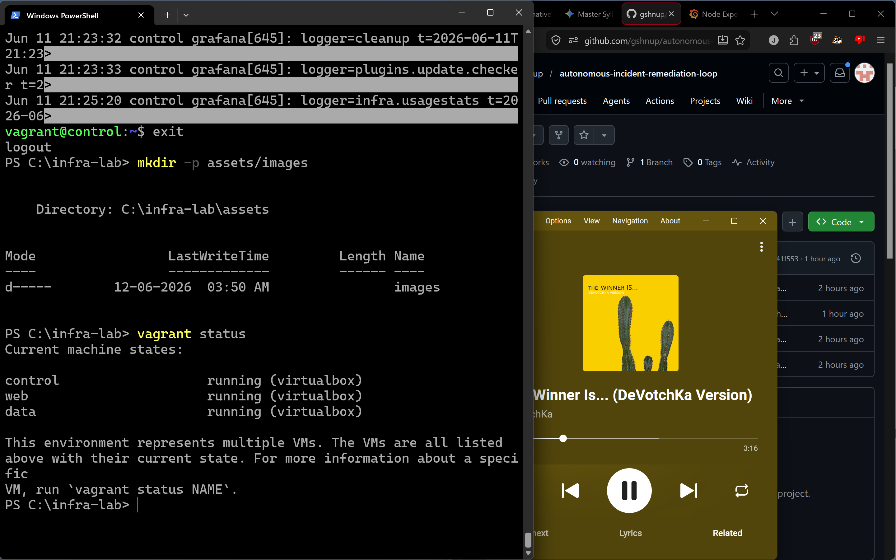
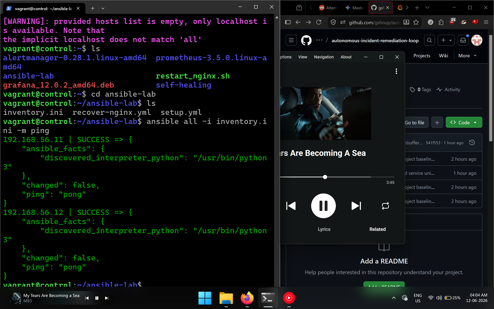
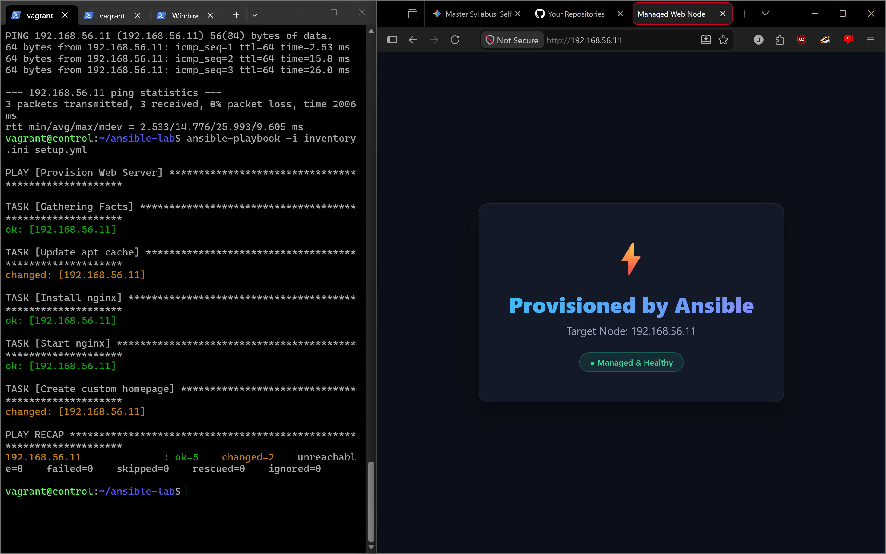
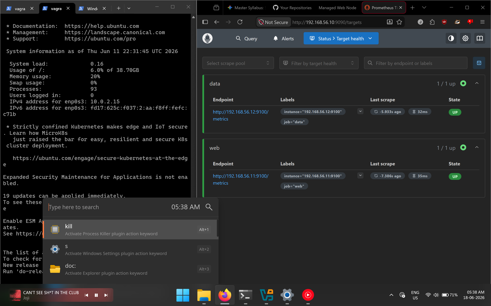
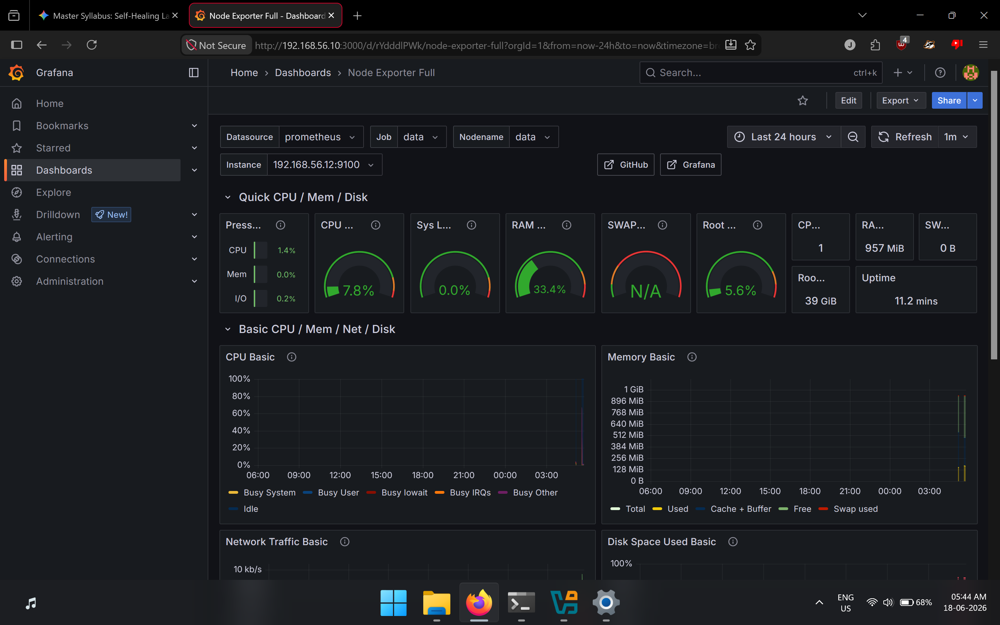
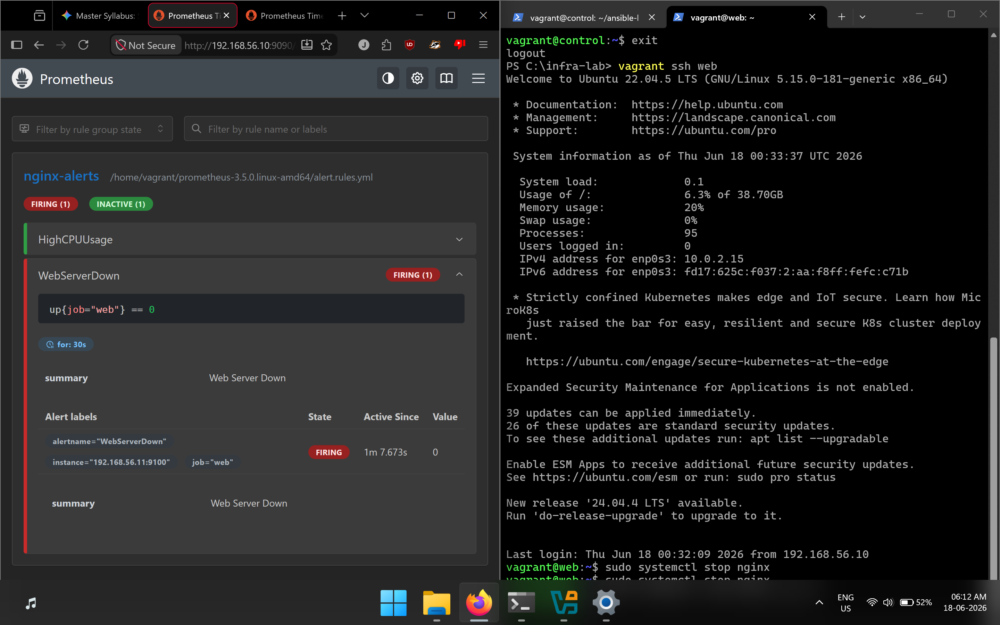
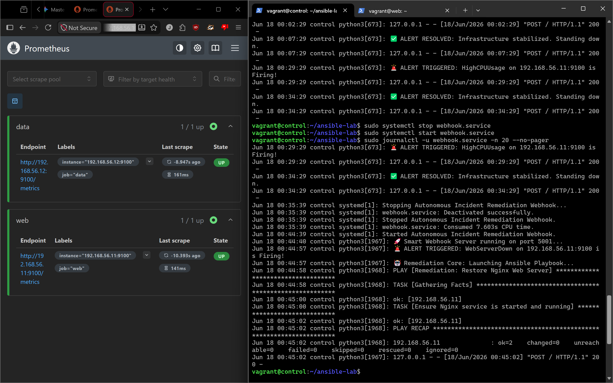

A local lab that monitors virtual servers and automatically recovers from failures — built entirely on a laptop using open-source DevOps tools.
This project builds a small-scale replica of real production infrastructure — entirely on a single Windows laptop. Three virtual servers communicate over a private network. One server monitors the other two. When something breaks, the system is designed to automatically detect it and fix it without human intervention.
Three Ubuntu virtual machines run on the host laptop inside VirtualBox, connected on a private network (192.168.56.0/24):
This is the complete flow from a server failure to automatic recovery:
Instead of manually clicking through VirtualBox to create each VM, a Vagrantfile was written — a config file that describes every machine, its IP address, and its resources. One command creates all three servers.
Vagrant.configure("2") do |config|
config.vm.define "control" do |m|
m.vm.network "private_network", ip: "192.168.56.10"
end
config.vm.define "web" do |m|
m.vm.network "private_network", ip: "192.168.56.11"
end
config.vm.define "data" do |m|
m.vm.network "private_network", ip: "192.168.56.12"
end
end

Ansible is installed on the control server. From there it can SSH into the web and data servers and configure them automatically — no manual logging into each one. SSH keys were set up so Ansible can connect without typing a password every time.
[web] 192.168.56.11 [data] 192.168.56.12


Node Exporter collects OS-level metrics (CPU, memory, disk, network) on target nodes. Prometheus scrapes those metrics every 5 seconds, and Grafana handles visual dashboard generation.
global:
scrape_interval: 5s
scrape_configs:
- job_name: 'web'
static_configs:
- targets: ['192.168.56.11:9100']
- job_name: 'data'
static_configs:
- targets: ['192.168.56.12:9100']


This is where the project executes a true self-healing system loop. When an application goes offline, Alertmanager intercepts the outage and passes a POST webhook call to a background Python listener, which instantly enforces recovery code via Ansible.
| Alert | Condition Rule | Production Meaning |
|---|---|---|
HighCPUUsage |
CPU idle % drops below threshold | Server is resource throttled/overloaded |
WebServerDown |
up{job="web"} == 0 |
Target node daemon runtime has dropped or crashed |
groups:
- name: nginx-alerts
rules:
- alert: WebServerDown
expr: up{job="web"} == 0
for: 30s
labels:
severity: critical
annotations:
summary: "Web Server Down"
WebServerDown status box transitioned into an active state when a service failure is forced.
